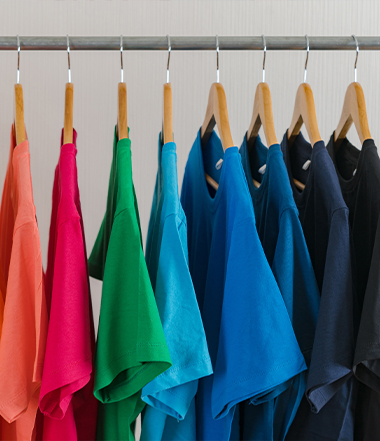
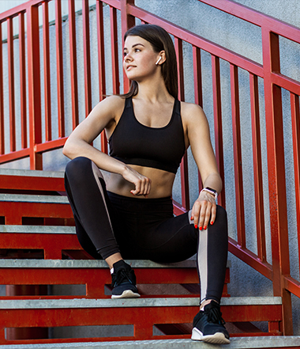
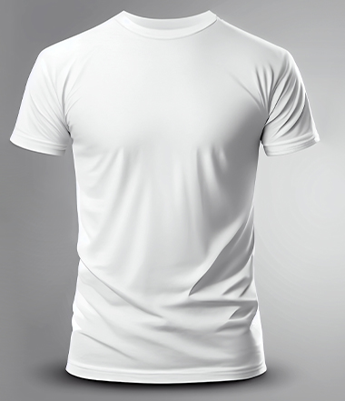
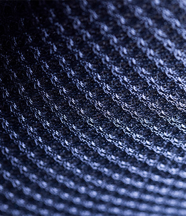

เสื้อผ้าสำเร็จรูป
ชุดกีฬา
เสื้อยืด / ชั้นใน
ผ้านวัตกรรม| ปัจจัย | W | R | WS | ระยะ | |
|---|---|---|---|---|---|
| ปัจจัยภายใน | |||||
| S1 | ผลิตครบวงจร OEM/ODM | .10 | 5 | 0.50 | L |
| S2 | นวัตกรรมสิ่งทอรักษ์โลก | .09 | 5 | 0.45 | L |
| S5 | ฐานะการเงินมั่นคง | .07 | 3 | 0.21 | L |
| W1 | พึ่งพาลูกค้า ICC 40% | .12 | 2 | 0.24 | I |
| W2 | ต้นทุนแรงงานสูง | .08 | 2 | 0.16 | L |
| W3 | สต็อกสูง หมุนช้า | .09 | 2 | 0.18 | S |
| ปัจจัยภายนอก | |||||
| O1 | เทรนด์สินค้ารักษ์โลก | .10 | 5 | 0.50 | L |
| O2 | ตลาดชุดเฉพาะทางโต | .05 | 4 | 0.20 | I |
| O3 | สิทธิภาษีอาเซียน | .05 | 4 | 0.20 | I |
| T1 | กำแพงภาษีสหรัฐฯ | .11 | 2 | 0.22 | S |
| T2 | แข่งขันด้านราคา | .08 | 3 | 0.24 | L |
| T3 | สงครามราคาในประเทศ | .06 | 2 | 0.12 | S |
| คะแนนรวม | 1.00 | 3.22 | |||
| กลยุทธ์ | 2569–2570ฟื้นธุรกิจเดิม | 2571นำร่องผ้าม่าน | 2572–2573ขยายธุรกิจใหม่ (มีเงื่อนไข) | ตัวชี้วัด |
|---|---|---|---|---|
② ระดับองค์กร Growth Strategy
S1S2O3W11 ลบ. |
Horizontal Growth ขยายลูกค้า OEM/ODM ในและต่างประเทศ ลดสต็อก เพิ่มกำไร | เริ่ม Concentric Diversification นำร่องผ้าม่านกับพันธมิตร | ขยายสิ่งทอตกแต่งอาคาร (ปลอกหมอน ผ้าคลุมเตียง) ขยายเมื่อผลทดลองผ่านเกณฑ์กำไร เงินสด และมีคำสั่งซื้อรองรับ |
|
③ ระดับธุรกิจ Differentiation
S1S2T2T31 ลบ. |
ข้อเสนอเฉพาะกลุ่มลูกค้า: คุณภาพ ดีไซน์ วัสดุมีใบรับรอง ODM ครบวงจร | ปรับข้อเสนอสำหรับลูกค้าโครงการผ้าม่าน | ขายตรงองค์กร + ผู้จัดจำหน่าย ตั้งราคาตามคุณค่า |
|
| ④ กลยุทธ์ระดับหน้าที่ (Functional Strategy)* งบประมาณ: ล้านบาทต่อปี เฉพาะปีที่ดำเนินกิจกรรม ตามแผนปฏิบัติงาน | ||||
การตลาด
W1O1O22+1 ลบ./ปี ตามกิจกรรม |
หาลูกค้า OEM/ODM และเครื่องแบบองค์กร ศึกษาตลาดผ้าม่าน | ทดลองขายผ้าม่าน เก็บความเห็นลูกค้า | ขยายตลาด เพิ่มสินค้าเคหะสิ่งทอ |
|
การเงิน
S5W31 ลบ. |
รายงานต้นทุน–เงินสดรายกลุ่มสินค้า เร่งเก็บหนี้ ลดเงินจมในสต็อก | ตั้งงบนำร่อง เงินมัดจำ งวดชำระ | ลงทุนเพิ่มตามผลและเงินสดจริง |
|
วิจัยและพัฒนา
S2O12 ลบ. |
พัฒนาเครื่องนุ่งห่มกับลูกค้า ทำต้นแบบผ้าม่าน | ทดสอบต้นแบบให้ผ่านข้อกำหนด | ปรับจากการใช้จริง ต่อยอดสินค้าใหม่ |
|
การดำเนินงาน
W2W3T22+2 ลบ./ปี ตามกิจกรรม |
ผลิตตามคำสั่งซื้อ ลดสต็อกเก่า ใช้ Semi-Automation จุดที่คุ้มค่า | ทดลองผลิต–ติดตั้งผ้าม่านกับพันธมิตร | เพิ่มกำลังผลิตตามคำสั่งซื้อจริง |
|
ทรัพยากรมนุษย์
W2S11 ลบ. |
อบรมขาย B2B ข้อมูล การผลิต ตั้งทีมข้ามสายงาน | ทีมเรียนรู้งานร่วมกับพันธมิตร | ทำคู่มือ รับบุคลากรเฉพาะทาง |
|